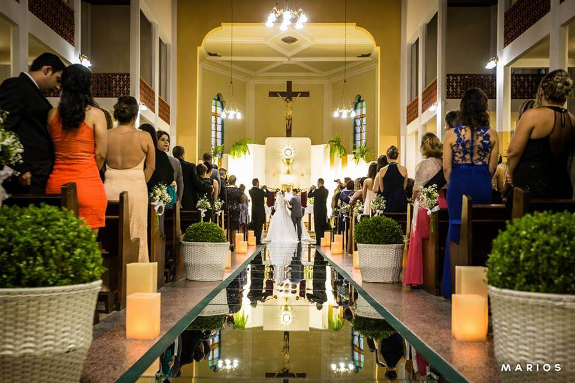
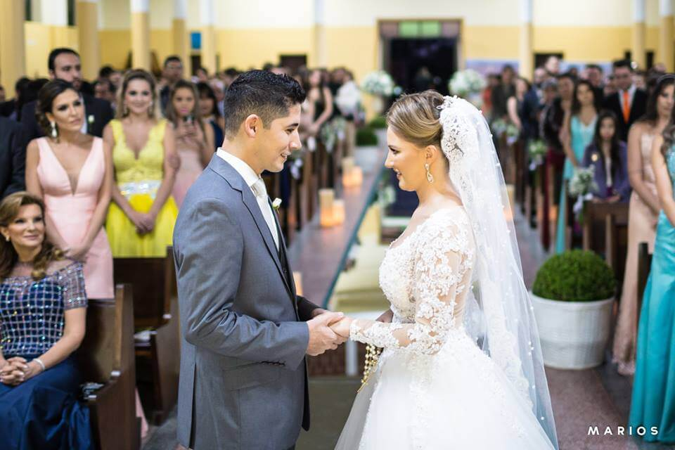
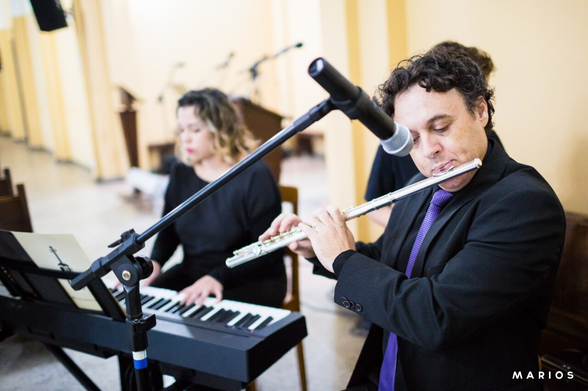
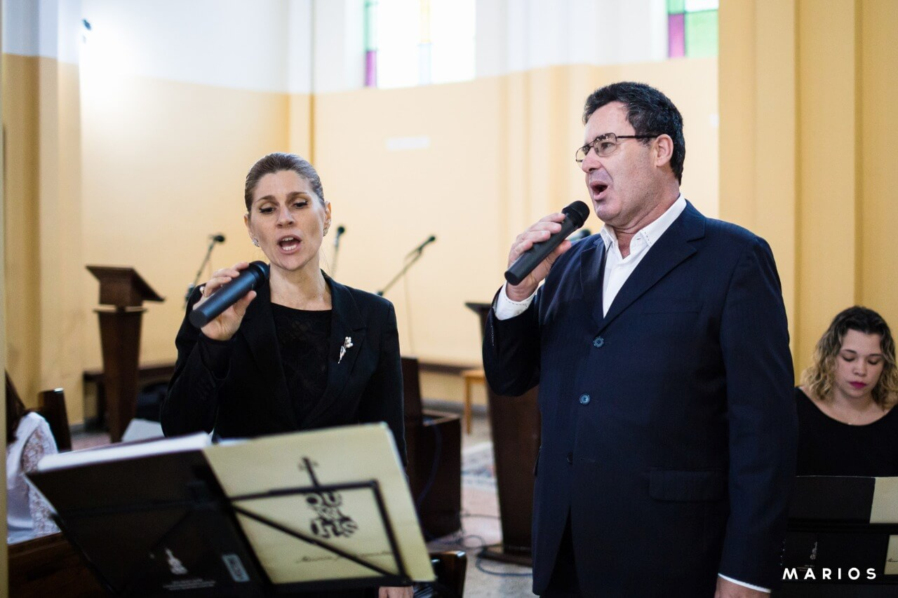
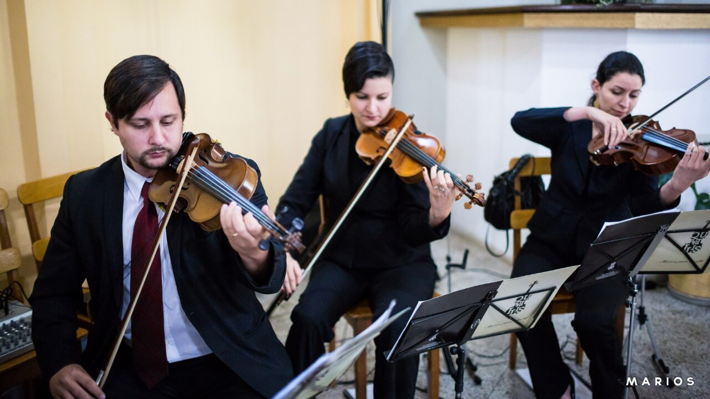
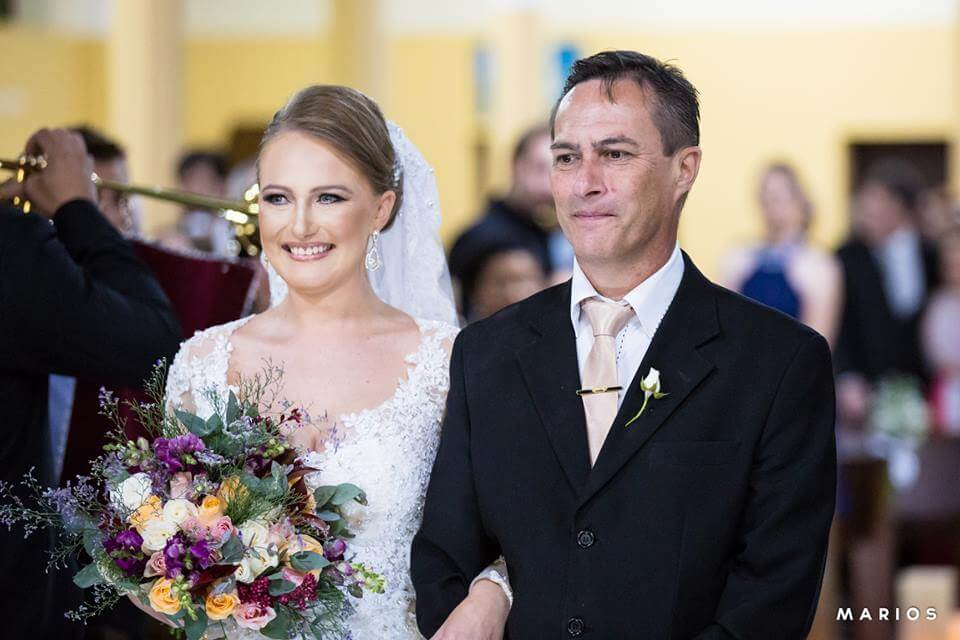
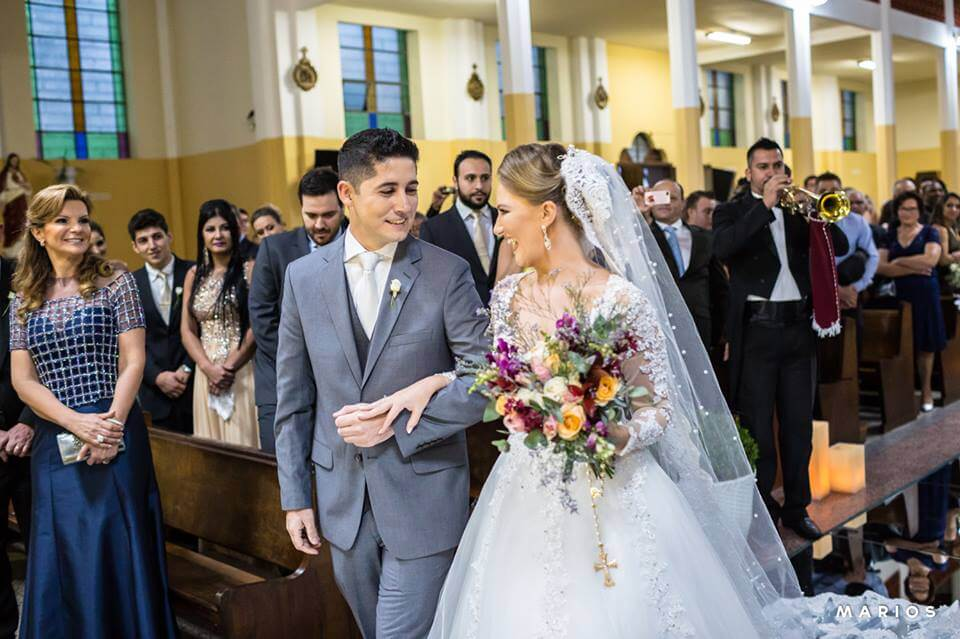
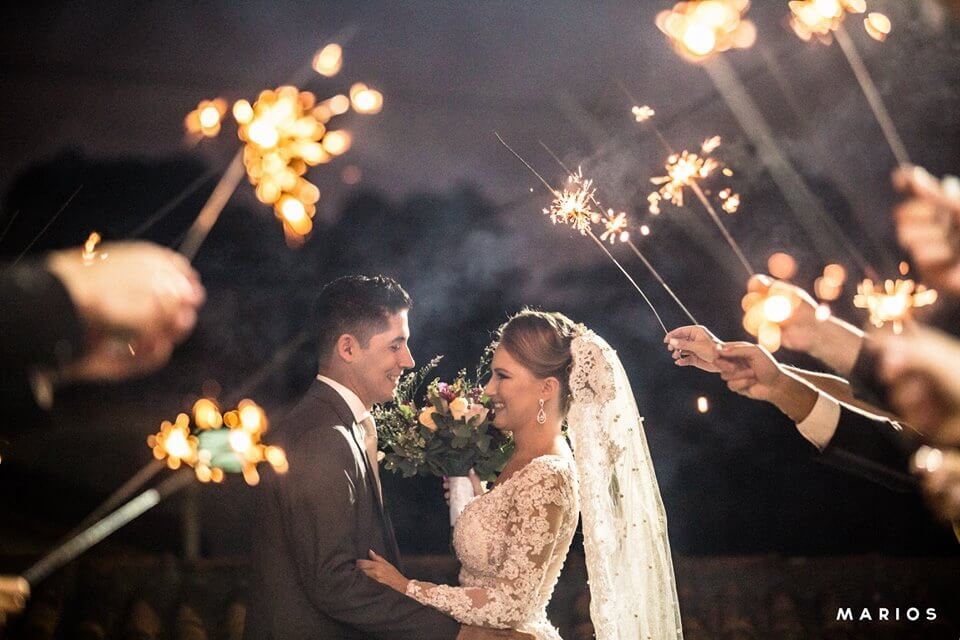

Casamento Tradicional - Fernando e Karine - Orquestra Quartilis
28 de dezembro de 2017
O casamento tradicional de Fernando e Karine aconteceu no dia 22 de abril de 2017 na linda Paróquia Nossa Senhora das Graças e Santa Gemma Galgani em Curitiba.
Os noivos escolheram a dedo os fornecedores, os músicos e as músicas!!! E o grande dia deles foi perfeito, especial e emocionante!!!!

Casamento Tradicional - Curitiba
A formação musical escolhida para executar a trilha sonora da cerimônia foi uma pequena orquestra de 10 músicos: 2 violinos, viola erudita, violoncelo, piano digital, flauta, 2 clarins e duo vocal (soprano e tenor).



A seleção de músicas (a seguir) teve repertório sacro e erudito, valorizando a composição de músicos escolhida pelo casal, e incluiu também algumas músicas favoritas dos dois, como Hino UEFA, A bela e a Fera e Something Stupid (arranjo feito especialmente para esta cerimônia).
- Entrada de Padrinhos: All I ask of you – Fantasma da Opera
- Entrada dos Pais: Jesus Alegria dos Homens – Bach
- Entrada do Noivo: Hino UEFA – Champions League
- Entrada de damas/pajens: The Flower Duet – Delibes (From Lakme)
- Entrada da Noiva: 2 clarinadas (rainha/ mahler) + Marcha Nupcial – Mendelssohn
- Entrada das Alianças: A bela e a fera – A. Menken
- Benção das Alianças: Ave Maria – Gounod
- Assinatura/Cumprimentos: Con te Partiró – Andrea Bocelli
- Saída Geral: Something Stupid – Frank Sinatra.

Entrada da noiva - Clarins
Casamento tradicional - Clarins
Fornecedores:
- Cerimônia: Paróquia Nossa Senhora das Graças e Santa Gemma Galgani (Curitiba)
- Recepção: Jockey Club do Paraná (Belloni Eventos)
- Música cerimônia: Quartilis
- Música recepção: Douglas e Murilo e banda
- Vestido da noiva: Ateliê Priscila Bonatto
- Decoração e mobiliario (igreja e recepção): Rúbia Valentim Designer em flores
- Foto, vídeo e love story: Grupo Marios (créditos das fotos do post)
- Dj, sonorização, iluminação e painel de led: Margoti Eventos
- Convites: Mayli Firma Criativa
- Dança dos noivos (ensaio): Center Dança para Noivos
- Pista de Dança: Dii Pista
- Doces e Bolo: Nilsa Doces
Para dicas sobre a contratação dos músicos, acesse: https://blog.quartilis.com.br/2017/08/19/musica-para-casamento-dicas/

Casamento tradicional - Quartilis